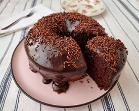

Bauru de forno com pão
- 4 colheres de sopa de maionese
- 2 pacotes de pão de forma
- Molho de tomate a gosto
- 400 g de presunto
- 450 g de muçarela
- Tomate cortado em rodelas
- Orégano a gosto
Modo de preparo
1 - Reúna todos os ingredientes;
1 - Reúna todos os ingredientes;
2 - Pegue uma forma e unte-a com maionese;
2 - Pegue uma forma e unte-a com maionese;
3 - Na forma untada, acrescente uma camada de pão de forma, de modo a forrar todo o fundo do recipiente;
3 - Na forma untada, acrescente uma camada de pão de forma, de modo a forrar todo o fundo do recipiente;
4 - Passe molho de tomate sobre a camada de pão de forma;
4 - Passe molho de tomate sobre a camada de pão de forma;
5 - Por último, faça uma camada de presunto, outra de mussarela, coloque as rodelas de tomate e salpique orégano a gosto;
5 - Por último, faça uma camada de presunto, outra de mussarela, coloque as rodelas de tomate e salpique orégano a gosto;
6 - Repita o processo mais uma vez e deixe a última camada com presunto, muçarela, tomate e orégano;
6 - Repita o processo mais uma vez e deixe a última camada com presunto, muçarela, tomate e orégano;
7 - Leve para assar, em forno a 180º graus, até a muçarela derreter;
7 - Leve para assar, em forno a 180º graus, até a muçarela derreter;

Bolo de chocolate
- 3 ovos
- uma xícara e meia de chá de açúcar
- Meia xícara de chá de óleo
- 1 xícaras de chá de chocolate em pó
- 2 xícaras de chá de farinha de trigo
- 1 xícara de chá de água quente
- 1 colher de sopa de fermento em pó
- Uma xícara de chá de leite
- Meia Xícara de chá de chocolate em pó
- 1 colher de sopa de manteiga
- 1 xícara de chá de açucar
Cobertura do bolo
1 - Em uma tigela, coloque 3 ovos, 1 e meia xícara de chá de açúcar, meia xícara de chá de óleo, 1 xícara de chá de chocolate em pó e 2 xícaras de chá de farinha de trigo. Misture delicadamente os ingredientes.
1 - Em uma tigela, coloque 3 ovos, 1 e meia xícara de chá de açúcar, meia xícara de chá de óleo, 1 xícara de chá de chocolate em pó e 2 xícaras de chá de farinha de trigo. Misture delicadamente os ingredientes.
2 - Em seguida, adicione 1 xícara de chá de água quente, 1 colher de sopa de fermento em pó e bata até ficar homogêneo.
2 - Em seguida, adicione 1 xícara de chá de água quente, 1 colher de sopa de fermento em pó e bata até ficar homogêneo.
3 - Transfira a massa para uma forma untada e enfarinhada com uma mistura de farinha de trigo e chocolate em pó. Leve para assar em forno preaquecido a 180 graus Celsius por 40 minutos.
3 - Transfira a massa para uma forma untada e enfarinhada com uma mistura de farinha de trigo e chocolate em pó. Leve para assar em forno preaquecido a 180 graus Celsius por 40 minutos.
Bolinho de chuva
- 2 ovos
- 1 xícara de açúcar
- 1 xícara de chá de leite
- 2 xícaras e meia de farinha de trigo
- 1 colher de sopa de maisena
- 1 xícara de açúcar
- 1 xícara de canela
Ingredientes da finalização
1 - Em uma tigela, coloque 2 ovos, 1 xícara de leite e 2 e meia xícaras de farinha de trigo. Misture até obter uma massa homogênea.
1 - Em uma tigela, coloque 2 ovos, 1 xícara de leite e 2 e meia xícaras de farinha de trigo. Misture até obter uma massa homogênea.
2 - Em seguida, adicione 1 colher de sopa de maisena e misture novamente.
2 - Em seguida, adicione 1 colher de sopa de maisena e misture novamente.
3 - Com uma colher, coloque pequenas porções da massa para fritar em óleo quente.
3 - Com uma colher, coloque pequenas porções da massa para fritar em óleo quente.
4 - Deixe dourar e retire com uma escumadeira.
4 - Deixe dourar e retire com uma escumadeira.
5 - Passe os bolinhos de chuva na mistura feita com açúcar e canela..
5 - Passe os bolinhos de chuva na mistura feita com açúcar e canela..
6 - Sirva em seguida.
6 - Sirva em seguida.

Mousse de chocolate com água
- 300 gramas de chocolate meio amargo picado
- 150 mililitros de água quente
1 - Em uma tigela com 300 gramas de chocolate meio amargo picado, adicione 150 mililitros de água quente.
1 - Em uma tigela com 300 gramas de chocolate meio amargo picado, adicione 150 mililitros de água quente.
2 - Com um batedor de arame, mexa até derreter o chocolate.
2 - Com um batedor de arame, mexa até derreter o chocolate.
3 - Coloque a tigela em cima de outro tigela com gelo e mexa bem até que fique com textura de mousse.
3 - Coloque a tigela em cima de outro tigela com gelo e mexa bem até que fique com textura de mousse.
4 - Finalize com flor de sal e sirva.
4 - Finalize com flor de sal e sirva.